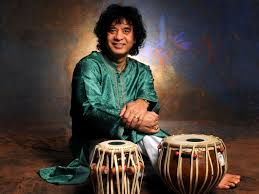
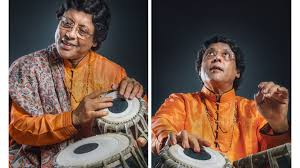
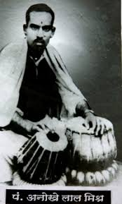
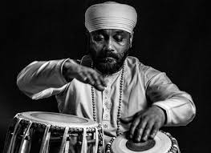
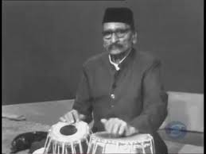

The art of playing Tabla involves using fingers and palms to create different beats. The instrument is a very vital part of the Indian classical music and has certainly become popular among the masses. Involving a lot of energy and passion to play, the skill of playing Tabla surely derives recognition. Get to know about some of the most popular and remarkable Tabla players India is blessed to have:
ZAKIR HUSSAIN:  A music producer, film actor, composer and probably the most prominent Tabla player recognized across the world, Zakir Hussain is a legendary musician when it comes to Hindustani Classical Music. He is the youngest percussionist to be awarded the titles of Padma Shri in 1988 and Padma Bhushan in 2002. He is also one of the youngest Musicians to receive Sangeet Natak Akademi Award, a recognition by India’s National Academy of Music, Dance and Drama; Sangeet Natak Akademi. His first Album went on to receive the 1992 Grammy Award for Best World Music Album. His numerous achievements have continued to make India proud and the recent invite he received in 2016 at the White House by President Obama made India all the more honored to be blessed with a talent like him.
2. Pandit Anindo Chatterjee:  A celebrated Tabla player born in a musical family with uncle and sister being prominent Sitar players of India, Pandit Anindo Chatterjee has been gifted with the ability to summon crystal clear melodies from his drums progressing to be one of the world’s finest Tabla players. He began playing Tabla in his early childhood and was inspired by his uncle Pandit Biswanath Chatterjee. He is the first Tabla player to perform in the House Of Commons and is also the recipient of the President’s Award in 1970. Just like Zakir Hussain, Pandit Anindo Chatterjee has also been honored with the Sangeet Natak Akademi Award in 2002. Indians were delighted to watch him perform at the Rashtrapati Bhavan when former U.S president Barack Obama visited India in 2010.
3. Pandit Anokhelal Mishra:  With the special ability to play ' Na Dhin Dhin Na ' with utmost clarity at extreme speed, Pandit Anokhelal Mishra was famous as “Jadugar”. He has given many solo performances along with working with talented artists like Ustad Allauddin Khan, Ustad Vilayat Khan and Ustad Ali Akbar Khan. He has also performed for All India Radio’s National Program Of Music and his performances have also been featured in Voice of America. He has fought poverty and deprivation at a very young age and has made a huge impact on Indian Classical music with his skills. He continues to be an inspiration for many aspiring musicians and his works made him popular as the “Samrat” (king) of Tabla playing.
4. Ustad Sukhwinder Singh Namdhar:  Sukhvinder Singh Namdhari started his training at the young age of 5 under the Pakawaj Samrat Ustad Nihal Singh of the Punjab Gharana. The natural gift of Laya and Taal that Ustad Sukhwinder Singh Namdhari possessed was observed by Sri Satguru Jagjit Singh Ji, the spiritual guru of Namdhari Sikh sect. He is known for his ability to capture the audience with his impulsive control and brilliance during his performances. As a solo artist Sukhvinder has received widespread praise and is considered as a skillful musician of both the Punjab and Benares repertoires and has also been a featured artist with the BBC Philharmonic Orchestra. His Jorhi performances have led to a sudden rise in admiration for the uncommon art of Jorhi playing. In recent times Ustad Zakir Hussain recognized Sukhvinder as the primary promoter of the Jorhi globally after his supreme performance at the 2016 Ustad Allah Rakha memorial concert.
5. Ahmed Jan Thirakwa:  The recipient of Padma Bhushan Award for Arts in 1970 and Sangeet Natak Akademi Award for Tabla in 1954, Ahmed Jan Thirakwa became Munis Khan’s disciple at the age of 12. He is generally considered a very well-known artist among the tabla players of the 20th century, and amongst the most significant instrumentalists in the history of Indian classical music. He was identified for his mastery over the fingering skills and appealing values of numerous Tabla styles, technical flair, and expressive musicality. These musicians have gained a lot of respect for India from all over the world with their skills and talent. They have assisted in keeping the Indian classical music alive within the masses. Let us never forget their contribution to the Indian music and hope that their work continues to inspire generations ahead.